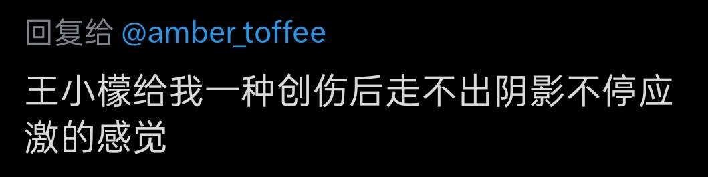

時璃風医詩🌈🏳️🌈
@hagishigure
@willa_citrus 你對標籤有一種防禦性的反移情。

王小檬𝖂𝖎𝖑𝖑𝖆🍋
@willa_citrus
@medicagoo @WfsFhr19544 我在这个地方就不那么友善了 我这个号起来俩月我俩就互ban了 我对这人实在没啥好话 这人基本上覆盖了能让我反感的绝大部分标签
王小檬𝖂𝖎𝖑𝖑𝖆🍋
@willa_citrus
这条不是挂人嗷 因为和amber互ban了我不能直接评论了 但又真的很想确认
相比于现实生活 在这个平台上 我确实展示的更多的是我受创脆弱乃至警惕敌意的一面
想知道其他大家对我会有这种感受吗
有的话具体是什么样的创伤或者哪句话会让大家产生这种感觉呢
可以告诉我 吗 https://t.co/BsHAC1gaSy